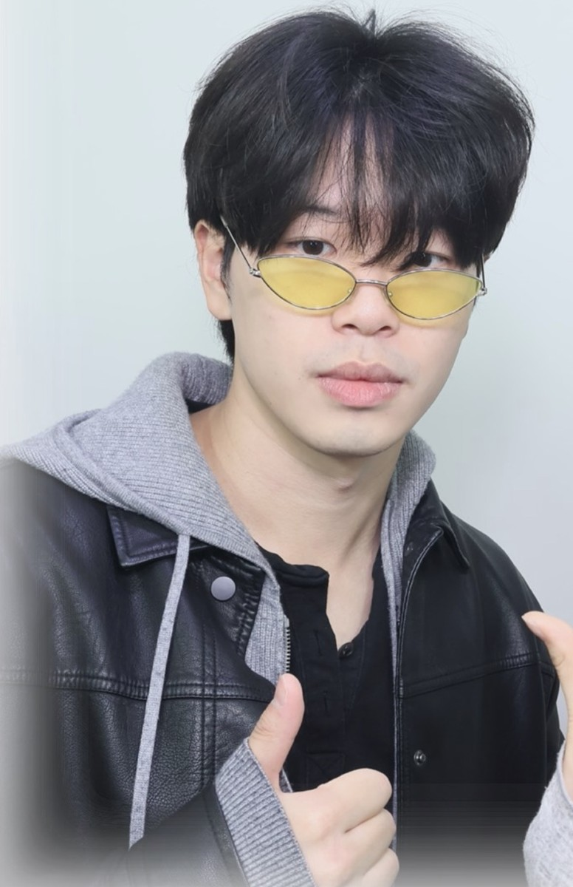
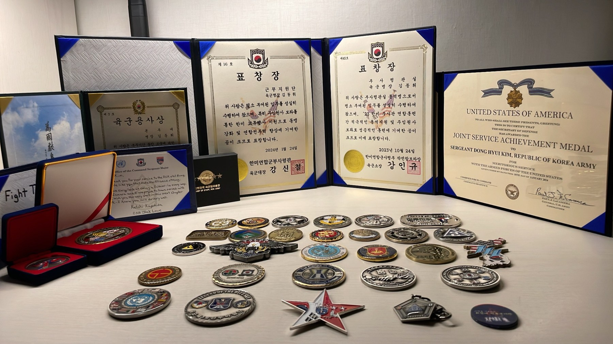

3D Gaussian Splatting for SLAM
Investigating 3D Gaussian Splatting for simultaneous localization and mapping. A manuscript is currently in preparation.
SEOUL NATIONAL UNIVERSITY
Mechanical Engineering
Electrical and Computer Engineering
I am an undergraduate at Seoul National University, double majoring in Mechanical Engineering and Electrical and Computer Engineering. I work at the intersection of robotics, 3D vision, and machine learning.
I am an undergraduate researcher in the RPM Robotics Lab with Prof. Ayoung Kim and the AIDAS Lab with Prof. Jaeyoung Do. My current work focuses on 3D Gaussian Splatting for SLAM and visual data augmentation for robot learning.

I am interested in 3D scene representations, robot perception and SLAM, and learning from visual data. The following projects are ongoing.
Investigating 3D Gaussian Splatting for simultaneous localization and mapping. A manuscript is currently in preparation.
Building the 3DGS augmentation module for a larger robotic dataset effort: metric scene alignment, articulated robot rendering, and measurable quality gates for generated demonstrations.
Engineering and machine learning projects, with implementation details, design decisions, and results on each project page.
An autonomous mecanum robot built around the realities of collection, braking, and on-board perception. My work focused on perception and model training for the team’s second-place competition system.
A reconstruction pipeline that combines MRI measurement consistency, anatomy-specific models, and practical GPU-memory and checkpoint management for 4×/8× accelerated scans.
Turning multimodal reasoning into a constrained engineering pipeline: valid permutation decoding, consistent frame coordinates, and a single averaged LoRA adapter for the official submission.
Using turbine physics as a baseline, learning its residual errors, and optimizing an ensemble against both forecast accuracy and an economic settlement metric.
A Raspberry Pi pan–tilt filming prototype that turns face-position error into servo commands, with calibrated pulse widths, manual infrared control, and a load-supporting mechanical assembly.
Integrating periodic or dilated-convolution features into a transformer forecaster, with explicit tensor interfaces and evaluation across weather and retail time series.
Feb 2026 — Present
Jun 2026 — Present
AIDAS Lab · Seoul National University
PI: Prof. Jaeyoung Do
Sep 2022 — Mar 2024
ROK–U.S. Combined Forces Command
Military service · Republic of Korea
Education
Mechanical Engineering
Electrical and Computer Engineering
I served as an interpreter at the ROK–U.S. Combined Forces Command from September 2022 to March 2024. This experience strengthened my ability to communicate clearly across languages and work in a multinational environment.
